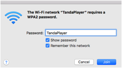
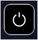

The Tanda Player is a combination of hardware and software.
To use for the first time you will need an empty USB memory stick in FAT32 format (the standard for most when purchased) and the necessary power connects (see the next sections for details). Powering it up will initialize the USB memory stick and start up all services.
Please note – FAT32 format is important! Alternative formats are unlikely to work. If you need to re-format a large USB device, it is recommended to download a formatting app and use that to format the partition with FAT32. “guiformat.exe”is reported to work. Note both Windows and Mac seem to fail to format large devices with FAT32!
In addition, please note that when constantly reading cheaper USB memory sticks such as when playing a playlist, you may notice drop-outs in the sound. This is either due to the speed of access or the number of errors being managed. PLEASE use good quality USB devices, they will give much better results all round!
The operation of the Tanda Player is done through web pages. The use of web pages to control it isolates the user’s actions from the actual playing of music. In particular, any sounds the users laptop may make such as beeps will not be played and if the user is running a particularly CPU intensive application in the background then this will not affect the Tanda Player and it will continue to play music. However it may mean that your own laptop does not talk to the Tanda Player very well and could result in the application appearing to be too sluggish to use normally.
The software generally works best on laptops or computers and has been designed to work on Google’s Chrome Web Browser. However it will work on tablets although these are significantly less powerful and so some screens may take longer to respond and you just need to get to know this and wait.
A special page has been designed for use on the phone which provides a sort of remote control for the device and is aimed at use in lessons where the teacher wants to play songs and have them stop at the end of the song or play a few songs of a tanda and stop etc. Similarly the teacher may speed up or slow down a song to help. The other applications are not intended to be used on the phone and very little effort has been made to make anything fit or be readable on a phone!
In general you will have to classify some songs before most screens will work properly and the better the classifications are the better the results for similar songs will be. However you can tick a box on the configuration page to apply a default value to all songs for all your configured settings. This means you can get to any song on any screen straightaway but it will mean that the advanced features such as finding similar songs are not going to work.
On first connection to power with an empty USB memory card, the system should initialize itself and be ready to use – although you can’t do much before you add music! You should see the Wi-Fi hotspot and be able to login to it.

The network is usually available within 15 seconds of powering up and the web pages are usually available to access within a minute or two (depending on how many songs are on the USB device as it has to check that it knows about them all!).
Key Information
The network name will be “TandaPlayer”and the password is exactly the same!
In a browser you may enter either 192.168.42.1 (the default
will be HTTP) as the address or on some computers you may be able to enter “tandaplayer3.local”To use the Camera / QR code scanner app, you will need to use HTTPS://192.168.42.1 and just accept any warnings your
browser may issue.
To use the mobile app as a remote control you may find that your phone will not connect to the network successfully. Simply disable the phone signal and enable the WiFi connection only. Android phones in particular will now only work this way.
If you connect the TandaPlayer to your own home network via an Ethernet cable, you should be able to use a browser to connect to both the TandaPlayer apps and also connect to the internet at the same time.
ALWAYS USE THE POWER OFF BUTTON ON THE MAIN HOME PAGE
BEFORE DISCONNECTING THE POWER!

REMEMBER! - always use the power
off icon on the main page and then wait for the red and green lights to just go
red (about 20 seconds) before disconnecting.
This will greatly reduce the chance of corrupting the USB memory
stick. This is the same as ejecting the
device from a laptop or PC. To help, the
home page will show a simple count-down.